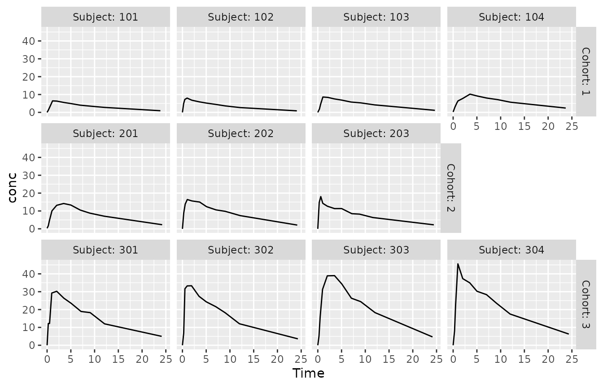
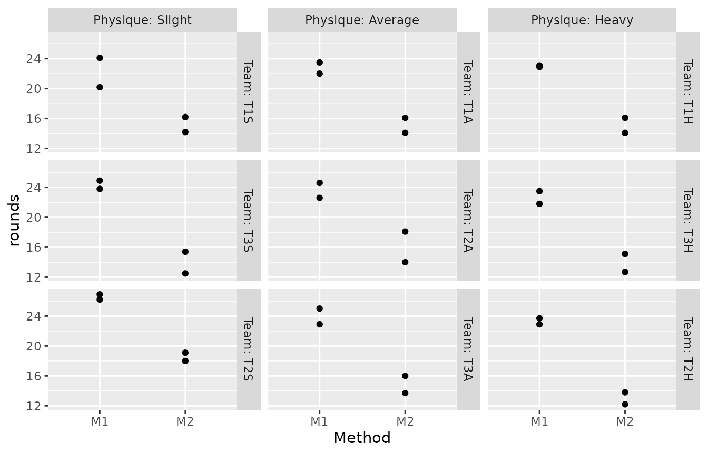

Introduction
ggragged extends the faceting system in ggplot2 to ragged grid layouts. In a ragged grid, panels are grouped into either rows or columns. Groups can have varying lengths, and panel placement within them is independent of other groups.
Here we showcase some examples of applying ragged grid layouts.
Example: Imbalanced grid
The motivation for creating ggragged came in the context of a phase I clinical trial—a dose-escalation study that enrolled cohorts of different sizes. For visual review of individual subject data, it would have been very useful to have cohorts clearly grouped together. The situation called for panels laid out in rows of uneven length.
Let’s demonstrate with some publicly available data.
There are a number of pharmacokinetic datasets distributed with R.
None of them quite match the structure for this example, so we first
prepare a dataset with the required features. Using the built-in
Theoph dataset as a starting point, we assign subjects into
3 imbalanced cohorts and simulate doubling doses between them:
data(Theoph)
Theoph2 <- transform(Theoph, Cohort = (as.numeric(Subject) - 1) %% 3 + 1)
Theoph2 <- transform(Theoph2, Subject = (as.numeric(Subject) - 1) %/% 3 + 1)
Theoph2 <- transform(Theoph2, Subject = sprintf("%d0%d", Cohort, Subject))
Theoph2 <- transform(Theoph2, conc = conc * 2^(Cohort - 1))
Theoph2 <- subset(Theoph2, Subject != "204")
with(Theoph2, table(Cohort, Subject))
#> Subject
#> Cohort 101 102 103 104 201 202 203 301 302 303 304
#> 1 11 11 11 11 0 0 0 0 0 0 0
#> 2 0 0 0 0 11 11 11 0 0 0 0
#> 3 0 0 0 0 0 0 0 11 11 11 11The standard tool for visualizing individual subject profiles is
facet_wrap(). However, due to the imbalanced group sizes,
the result here does not do a great job at communicating the cohort
structure in the data:
p <- ggplot(Theoph2, aes(Time, conc)) + geom_line()
p + facet_wrap(vars(Subject, Cohort), labeller = label_both)With facet_ragged_rows(), we can have each cohort
distinctively laid out on a row of its own:
p + facet_ragged_rows(vars(Cohort), vars(Subject), labeller = label_both)
This plot also clearly shows the general escalation of concentration
levels between cohorts, as all panels share the same y-axis range. If we
instead wanted to focus on variation between subjects within cohorts,
for example for data review purposes, we can set
scales = "free_y" to let y-axis ranges vary between
rows:
p + facet_ragged_rows(vars(Cohort), vars(Subject), labeller = label_both, scales = "free_y")This effect would not be possible with facet_wrap(),
where we could only have axis ranges vary between all panels, or none at
all.
Example: Balanced grid
Ragged grid layouts can be useful in a balanced group setting, too. They can still clarify the nesting hierarchy between faceting variables in the panel layout. Let’s look at an example.
The Gun dataset in package nlme records the
results of an experiment on methods for firing naval guns. The
experiment measured the number of rounds fired per minute. 9 teams of
gunners of 3 physiques (3 teams each) each tested the 2 methods being
compared:
data(Gun, package = "nlme")
with(Gun, table(Method, Team, Physique))
#> , , Physique = Slight
#>
#> Team
#> Method T1S T3S T2S T1A T2A T3A T1H T3H T2H
#> M1 2 2 2 0 0 0 0 0 0
#> M2 2 2 2 0 0 0 0 0 0
#>
#> , , Physique = Average
#>
#> Team
#> Method T1S T3S T2S T1A T2A T3A T1H T3H T2H
#> M1 0 0 0 2 2 2 0 0 0
#> M2 0 0 0 2 2 2 0 0 0
#>
#> , , Physique = Heavy
#>
#> Team
#> Method T1S T3S T2S T1A T2A T3A T1H T3H T2H
#> M1 0 0 0 0 0 0 2 2 2
#> M2 0 0 0 0 0 0 2 2 2When visualizing these data, we could facet the plot by team to focus
on the informative within-team differences in each panel. To also
communicate the selection of teams by physique, we could show these data
in a 3x3 grid with facet_grid(). For that we need a helper
variable, a team identifier nested within physique:
p <- ggplot(Gun, aes(Method, rounds)) + geom_point()
p + facet_grid(vars(Team = substr(Team, 1, 2)), vars(Physique), labeller = label_both)There are some issues with this presentation. The layout does not
clearly communicate the fact that there were 9 separate teams. It also
visually invites you to compare individual teams that happen to be
grouped on the same row across physiques, which is not a particularly
interesting comparison. facet_ragged_cols() can help:
p + facet_ragged_cols(vars(Team), vars(Physique), labeller = label_both)
Now each panel is labelled with the original team identifier, the labels clearly pointing out the 9 teams. The additional strips break up the rows of panels, visually signaling that comparisons across them are not particularly relevant. We can also see that the order of the teams (which in the data is not based on the alphanumeric team identifier, but rather on the rate of rounds fired) is preserved within physiques.